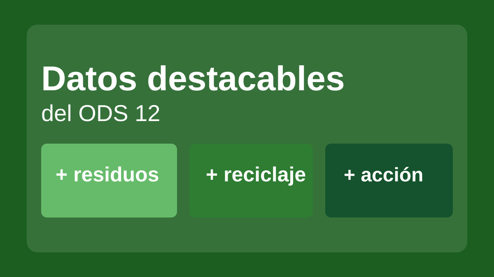
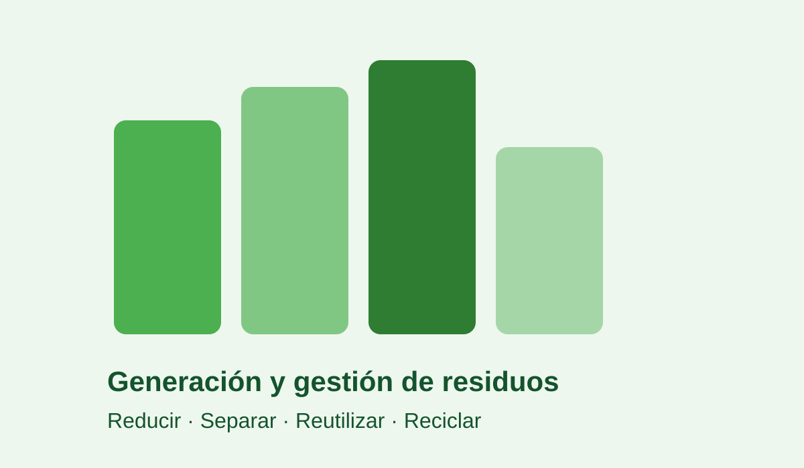
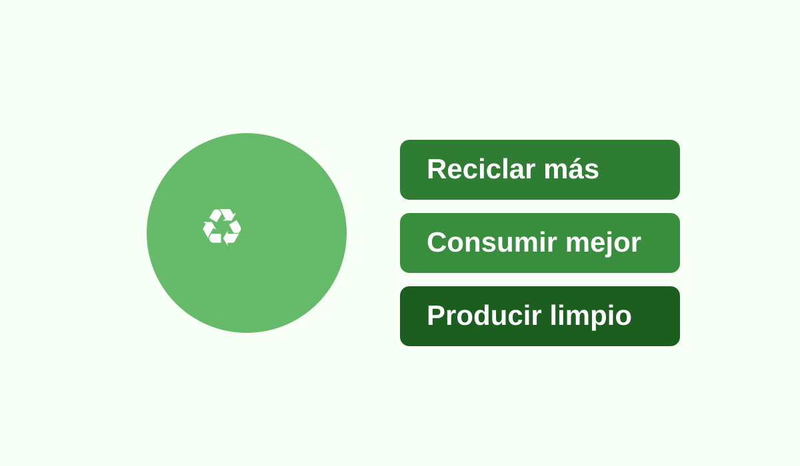

En muchos países, el consumo de materiales crece más rápido que la capacidad de regeneración de la naturaleza. El ODS 12 busca equilibrar esa relación.

La generación de residuos sólidos urbanos aumenta cada año y todavía existe una gestión insuficiente en muchas ciudades.

Mejorar la separación de residuos y ampliar la economía circular reduce emisiones, ahorro energético y extracción de materias primas.

Los cambios de hábitos en hogares, escuelas, empresas y administraciones son fundamentales para cumplir las metas del ODS 12 antes de 2030.